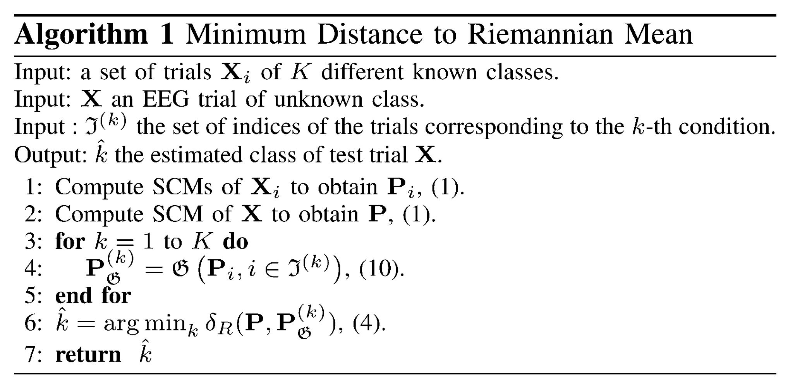
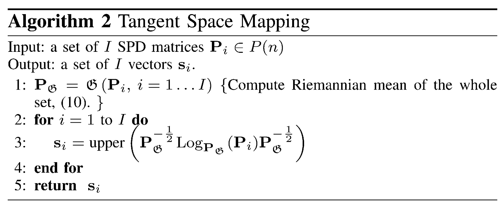

写在前面
17年暑假的时候入门了SPD流形，现在打算慢慢拾起来。介绍一个传统机器学习到流形上衍生的文章。
- MDRM算法可以看出流形版本的1-NN，不过距离和中心都需要用黎曼度量来计算
- TSLDA算法是将流形点映射到均值点切空间上，欧式的判别分析就可以直接使用
SPD矩阵流形基础
SPD矩阵
对称正定矩阵定义为
Sn++={P∈Rn×n∣uTPu≻0,∀u∈Rn}
对矩阵P∈Sn++进行特征分解
P=Udiag(σ1,…,σn)UT
则矩阵指数算子和对数算子定义如下
exp(P)log(P)=Udiag(exp(σ1),…,exp(σn))UT=Udiag(log(σ1),…,log(σn))UT
黎曼度量
Sn++是一个可微的黎曼流形，任意点P∈Sn++的导数构成的切空间TP是一个对称矩阵空间。
在切空间任取两点S1,S2∈Tp，可选择局部内积来定义SPD流形Sn++上的度量(natural metric)
⟨S1,S2⟩P=tr(S1P−1S2P−1)
该内积自然诱导出切空间的范数
∥S∥P2=⟨S,S⟩P=tr(SP−1SP−1)
当P=I时，该范数等价于Frobenius范数，即∥S∥F2=⟨S,S⟩I。
黎曼距离
设流形上曲线Γ(t):[0,1]→Sn++的起点Γ(0)=P1和终点Γ(1)=P2，则曲线的长度可表示为积分形式
L(Γ(t))=∫01∥Γ˙(t)∥Γ(t)dt
其中Γ˙(t)∈TΓ(t)为切向量，∥⋅∥⋅为切空间的范数。流形上连接P1和P2的最短长度曲线称为测地线。上述内积和范数可诱导出流形Sn++上的测地线距离，即黎曼距离。
δR2(P1,P2)=∥log(P1−1P2)∥F2=i=1∑nlog2λi
其中λi是P1−1P2的第i个实特征值。该距离具有如下特性：
δR(P1,P2)=δR(P2,P1)
δR(P1,P2)=δR(P1−1,P2−1)
δR(P1,P2)=δR(WTP1W,WTP2W),∀W∈Gl(n)
最后一个性质验证了仿射不变性(affine invariance)，因此该黎曼度量也称为仿射不变黎曼度量(Affine Invariant Riemannian Metric, AIRM)。
投影映射
任取一点P∈Sn++，切空间TP由点P处的切向量Si与Si投影至流形点Pi=ExpP(Si)之间的关系如下：
ExpP(Si)=Pi=P1/2exp(P−1/2SiP−1/2)P1/2LogP(Pi)=Si=P1/2log(P−1/2PiP−1/2)P1/2
切空间是具有欧式度量的，因此到点P的黎曼距离可用点P处切空间上的欧式距离来计算
δR(P,Pi)=∥LogP(Pi)∥P=∥Si∥P=∥upper(P−1/2LogP(Pi)P−1/2)∥2
其中upper(⋅)是一个矩阵化向量的算子，保留对称矩阵的上三角并向量化，且对角元赋权值1而非对角元赋权值2。
均值
A(P1,…,PI)=argP∈Sn++mini=1∑IδE2(P,Pi)=I1i=1∑IPi
G(P1,…,PI)=argP∈Sn++mini=1∑IδR2(P,Pi)
尽管该问题理论上局部最小值存在且唯一，但没有闭解，因此需要使用迭代算法求解该最小化问题。
基于黎曼均值的最小距离
本质上就是SPD流形上的1-NN算法。算法流程如下：

基于切空间的线性判别分析
首先将数据协方差矩阵投影至切空间上，那么选哪个点更合适？文章给出用全体协方差矩阵的黎曼均值点PG=G(Pi)来构造切空间，投影点为
si=upper(PG−1/2LogPG(Pi)PG−1/2)
这就完成了流形点到切空间的映射，映射具有保距性，流形的几何关系在切空间都得以保留。此外，流形上度量的计算需要复杂的矩阵分解，而欧式空间距离相对而言简单得多。因此用切空间近似黎曼几何具有非常大的潜力。下面是切空间映射算法流程：

投影至切空间后，传统的欧式分类算法可直接使用，文章使用经典的线性判别分析(LDA)来完成投影点的分类。
小结
上面介绍了流形上的分类算法，其中很大篇幅都是介绍流形上的操作，因此掌握了这些基础后可以尝试进行新的改进。不过鉴于文章是2012年发表的，后面已经有很多改进算法，能想到的和不能想到的估计都已经做遍了，所以简单的小改进是没多大意义的。这也反过来说明优秀的文章不仅仅需要找到合适的切入点，还需要符合时代的潮流。
References